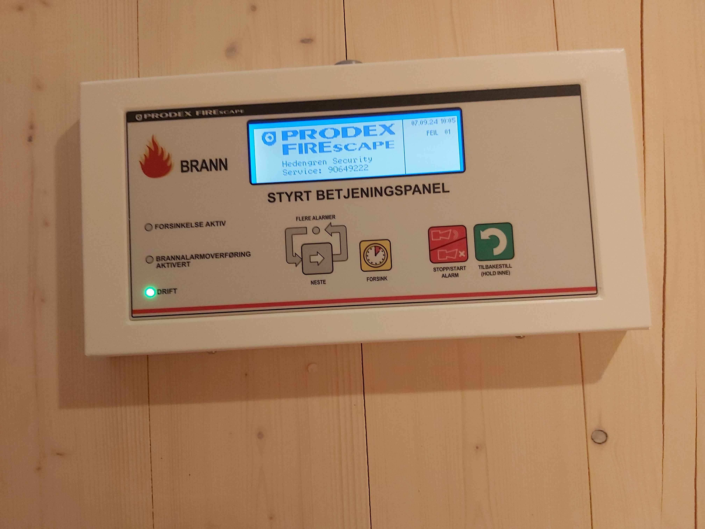
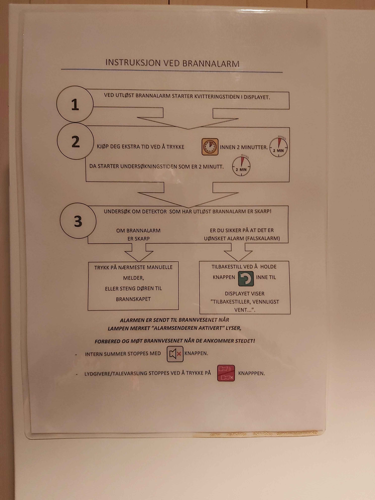
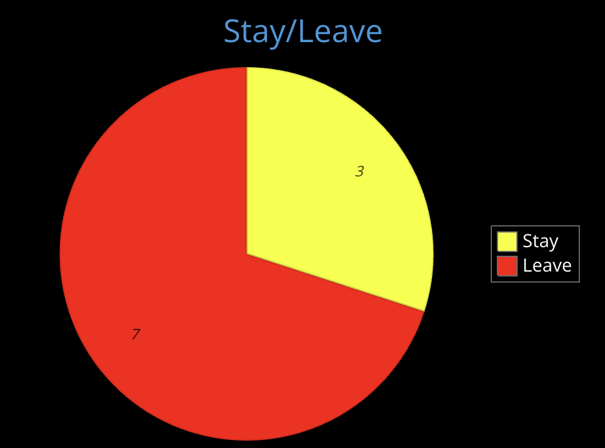

Firefighters against the false alarms

Do you know how many false alarms are there?
Students at Hiof start another false fire alarm
Another day, another false fire alarm at Remmen Hiof. The fire department has 4 units, each unit consisting of 5 firefighters, these units need to be able to reach the citizens of Halden. And given the time it takes for the students to turn off the fire alarms, the fire department believes that there shouldn't be so many calls going through to them, so why do they get called in to Remmen approximately 10 times a semester?
No safety instructions for exchnage students?
One issue that should be brought to attention is the fact that there are no English instructions on the fire panels, this has been brought up by multiple of the students we interviewed. One student, Stine, has experience with friends that are exchange students that have had problems with turning off the fire alarms considering the lack of English instructions.
This is a problem the fire department sees as a problem but can´t do anything about themselves as its SIØ’s responsibility.


The price
The cost of a false alarm is set to 5k, most students we interviewed said that it is not a bad price even though it would sting to have to pay that sum, however they also see that people are more cautious now that the price has increased.
Leader Ole Henrik explains that Halden is one of the cheapest places in Østfold to receive a fine, stating that other places like in Oslo the prices reach 10k. Following this he explains that 9/10 alarms are false, however this doesn't stop them from leaping into action at each alarm.
False alarms cause students to not evacuate
Not all students evacuate the building when the fire alarm goes off, this is a safety issue, Ole Henrik says that this could be a problem considering the possibility of a fire and how they then would always be forced to go through all the student rooms to make sure no students are still in their rooms.
We asked some anonymous students if they evacuate every time the alarm goes off and so far, this is the statistics:

Improvement coming?
As for further actions we plan to take this matter further to student council at Hiof.
If you are a student, just remember to still *********** or ring 110 in case of false alarm.
Thank you everyone who agreed to participate in our interview!